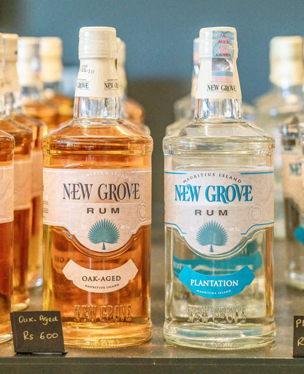

볼 만한 것이 많다는 가이드 스티브의 말투에는 약간의 설렘이 묻어났다. 비가 올 것이라는 예보가 무색하게도, 날씨가 좋았다. 차창 밖 풍경은 마치 수채화를 보는 듯했다.
푸른 하늘과 흰 구름, 초록빛 사탕수수는 세상을 정확히 세 등분으로 나누어 캔버스를 수놓았다. 이윽고 도착한 곳은 설탕박물관(L’Aventure du Sucre).
박물관은 옛 설탕 공장을 리모델링한 건물이었다. 내부로 들어서니 설탕을 만들어 유럽 등지로 실어 날랐을 때의 모습을 재현해 둔 풍경이 가장 먼저 등장했다.
스티브는 다소 낮은 목소리로 설명을 시작했다. “오래전부터 설탕을 즐겼던 중동 지역과는 달리, 유럽은 중세시대에 접어들어서야 그 맛이 전해졌어요. 달콤한 소금이라는 별명과 함께.”
걸림돌은 단 하나, 가격이었다. 설탕의 원료인 사탕수수를 재배할 수 있는 지역은 일부 열대 지방에 불과했고, 유럽까지 오는 운송비도 적잖았기 때문이다.
스티브는 설명을 이어갔다. “유럽의 귀족들에게만큼은 가격이 큰 문제가 되지 않았어요.
설탕으로 음식을 만들어 사람들을 초대하는 걸 자랑으로 여겼고, 샹들리에 같은 장식이나 조각 작품까지 만들어 거실에 전시했을 정도였다고 하니까요.”
그렇다면 더 치열하게 얻어야 했다. 바야흐로 대항해시대. 유럽의 사람들이 필요한 땅을 찾아서 기꺼이 노를 저었을 때다. 네덜란드 사람들이 이곳에 가장 먼저 닿았다.
그들이 다녀간 즈음부터 이곳에서 사탕수수의 흔적이 발견된다니, 설탕을 향한 욕망의 손길이 이곳까지 뻗친 셈이었다.
본격적으로 사탕수수 농장이 생겨났던 것은 프랑스가 섬을 점령한 직후부터였다고. 그들은 아프리카에서 노예를 끌고 와 농장을 키워 나갔다.
사탕수수는 섬 전체를 뒤덮었다. 숲은 줄어들었고, 사탕수수 농장은 계속 늘어가고만 있었다. 1950년대에 이르러서는 섬의 대부분이 사탕수수 농장이었다고 한다.
“그래도 설탕이 한때 모리셔스를 먹여 살렸던 것은 맞아요. 이제는 설탕이 흔해졌지요. 가격이 많이 내려갔다는 이야기입니다.
요즘은 사탕수수 농장이 점점 줄어들고 있어요. 대신 그 자리에 다시 나무를 심어 환경을 회복하는 데 노력을 기울이고 있지요.”
스티브의 목소리에는 처음과는 다르게 힘이 가득 들어가 있었다.
박물관을 빠져나왔다. 일행들의 발걸음을 붙잡았던 것이 있었으니, 바로 기념품점.
미묘하게 다른 맛을 보여 주는 설탕이 매력적이었지만, 모리셔스의 또 다른 특산물인 럼(Rum)도 관람객에게는 인기였다.
무료로 맛을 볼 수 있었다. 순수한 럼은 패스. 바닐라나 커피 향을 첨가해 누구나 쉬이 즐길 수 있게 만든 게 호기심을 자극했다.
바텐더의 권유에 모든 종류의 럼을 다 맛보고야 말았다. 아직 해가 중천인데!

설탕박물관
운영시간: 09:00~17:00
주소: B18 Pamplemousses MU 21001, Pamplemousses, Mauritius
전화: +230 243 7900
홈페이지: aventuredusucre.com
입장료: 성인 400MUR, 어린이(6~13세) 200MUR
출처 : 트래비 매거진(http://www.travie.com)